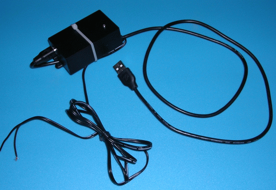
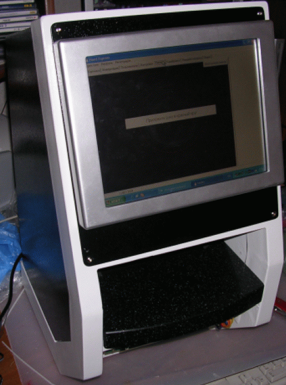
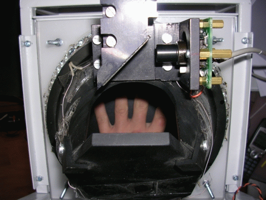
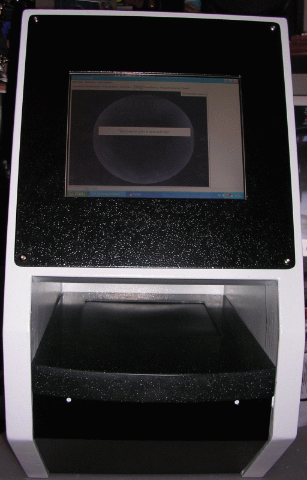
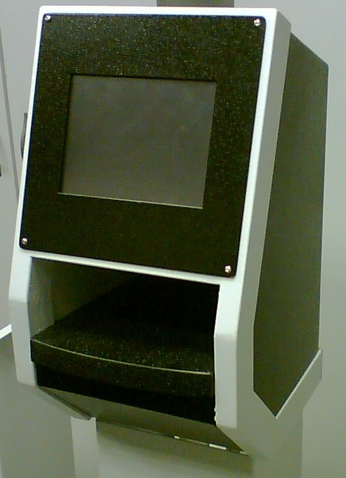
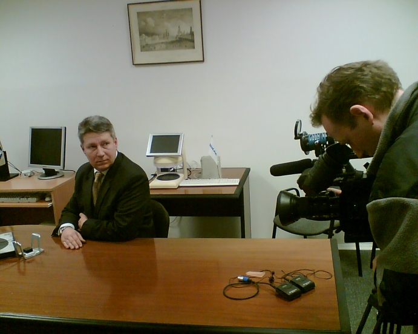
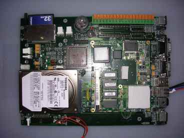
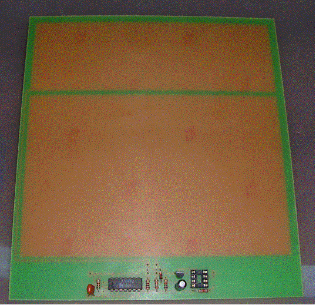
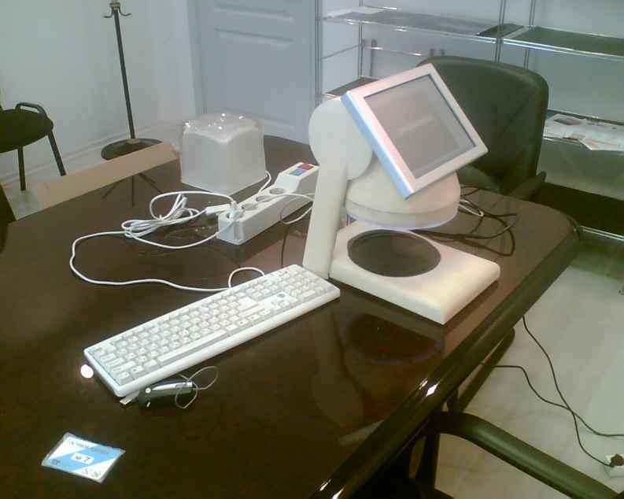

News
23.04.2007

21.04.2007

20.04.2007

10.04.2007

03.04.2007

30.03.2007

23.03.2007

18.03.2007

13.03.2007

At this time the assembling of the biometrical identification system "Handscan" (the big lens free generation) are begun.

19.02.2007

11.02.2007

The workable, big lens free mockup of the identification system "Handscan".

01.02.2007

20.01.2007

will be changed to the motherboards, which based on PC-104 standard, so they are cheaper and smaller (see photo below).

18.01.2007

12.01.2007

07.01.2007
29.12.2006

Top and Bottom side

25.12.2006
New electronical unit was developed for using in the access control systems based on a "Handscan" system. It might be built in the high power devices of the access control systems. It is monitored by Handshake device via USB & TCP/IP interfaces. It means this unit might be network resourse or simple local device. Moreover, this unit might be used for driving of high power devices in the modern "smart" systems (for example "Smart house").

23.12.2006
It has been preparing to publicate the matter concerned the algorithms and the electrical scheems of the "Handscan" system. It'll be publicated by Moscow Aviation Institute (Russia).

12.11.2006
The team of the creators informs that the new version of the "Handscan" device was produced. It hasn't the big lens system. So the weight of the new device has been decreased up to 70%. It contains infrared camera, which equiped with small obective-glass. All functions of image corrections are executed by the software only.The photo of the laboratory mock-up is presented below.


08.09.2006